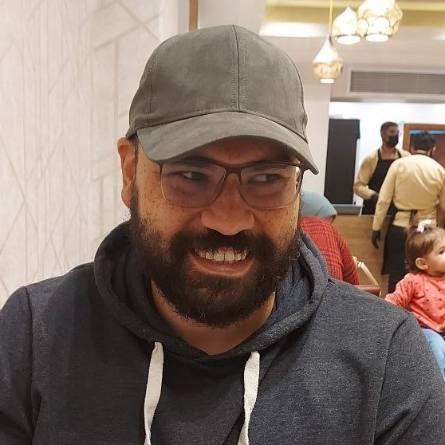

Abdalla Ahmed
ETL Developer
About Me
I am self-taught enthusiastic programmer. Exploring the wilderness of software development and technology with much passion at my own pace. I have full-time job in Oil & Gas sector as production engineer and I work flexible hours as ETL/Data Engineer in Upwork freelancing platform. Currently seeking a position in software development to apply my knowledge and experience with a professional team. My services include but not limited to:
- Web Scraping and Web Research
- Data Mining/Data Processing/Data Cleansing
- Task Automation and integrating hosting solutions (Heroku, Amazon EC2, digital ocean)
Age
30
Email
a.a.devmail@gmail.com
Phone
+21000 233 819
Address
Suez Canal St., Mansoura, Dqahaliyah - Egypt
Professional Skills
Python
Linux/Bash
HTML & CSS
Git
PHP
Django
SQL
JQuery
JavaScript
C++